Echoes art reference
The look we settled on while building the Still Out There practice game: dark, moody 16-bit pixel art at 640×360, cyan for the story voice, amber for verified records. Use it to lock palette, type and asset specs at Hour 0 instead of designing from nothing.
The look, view by view

Title / hub backdrop
- Earth is the hero light. Big, detailed, cyan rim glow, terminator shadow.
- Wide letter-spaced pixel type, cyan for actions, amber for the tagline.
- Ground ridges dither from navy into lavender grey; no pure black anywhere.
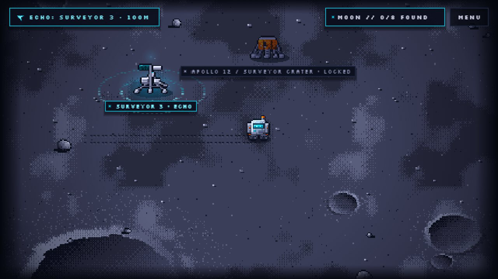
Top-down map (3/4 view)
- Regolith is value noise quantised to 4–5 shades with ordered dithering.
- Craters: light rim top-left, deep indigo bowl bottom-right.
- Points of interest get a soft cyan ring and a notched label; locked ones go grey.
- Fits the new Moon / Mars chapter maps directly.
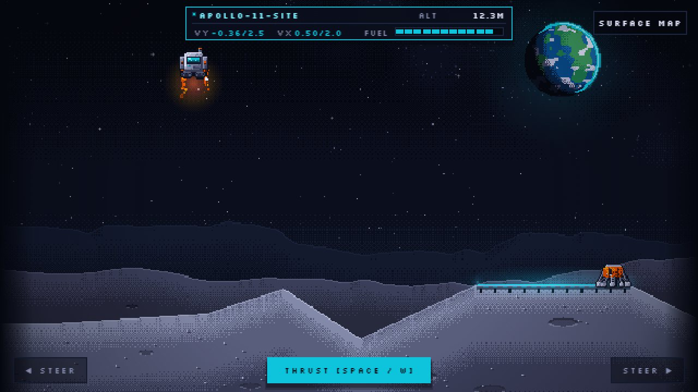
Side view, Moon
- Four parallax layers: stars and Earth, far ridge, mid ridge, near ground. Each farther layer is darker and cooler.
- Orange is reserved for thrust and lamps, so it always reads as "energy".
- Telemetry panel: dark translucent fill, 1px cyan edge, mono digits. Gauges instead of tables.
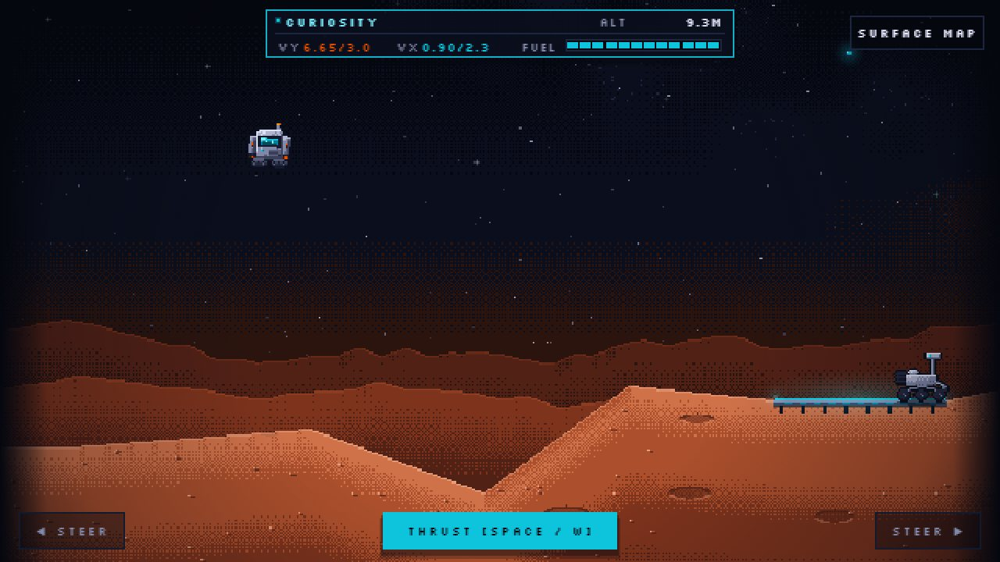
Side view, Mars
- Same structure as the Moon, warm ramp swapped in. The sky gets a dusty brown haze band above the ridges.
- Earth shrinks to a pale cyan dot.
- Swapping the ground ramp is how one scene template serves several destinations.

Record reader (DOM)
- Authentic NASA photo in an amber frame with ID, credit and source link.
- The narrator's line sits in a separate cyan panel tagged "Game story".
- This is a ready-made template for the Memory Echo / Archivist Note split.
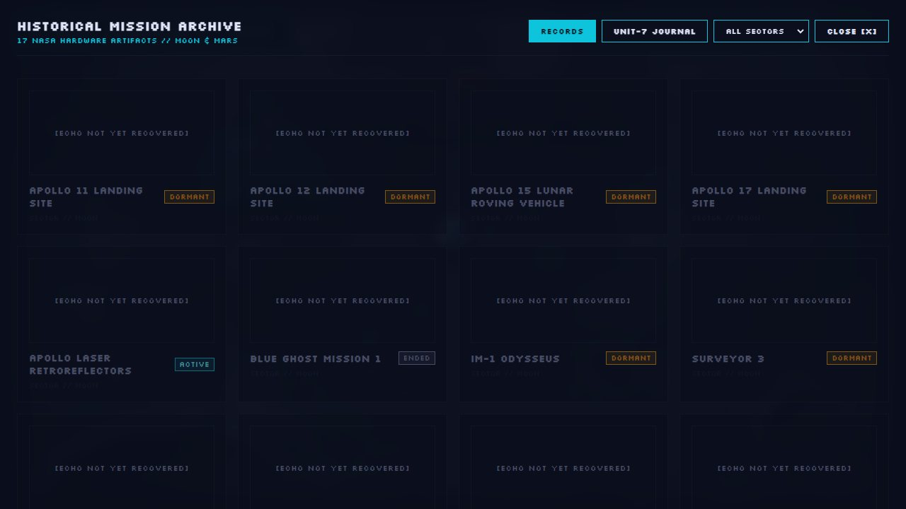
Catalog grid (DOM)
- Status shown as an outlined badge with its own colour and word, so colour is never the only cue.
- Locked items keep the layout and dim the content.
- Maps onto the museum catalog and its status filter.

Cutscene / chapter card
- Same layers as gameplay, slow camera, text only in the bottom console.
- Console has corner brackets, a step counter (03 / 06) and a skip button top-right.
- Good fit for the Opening, chapter transitions and the ending.
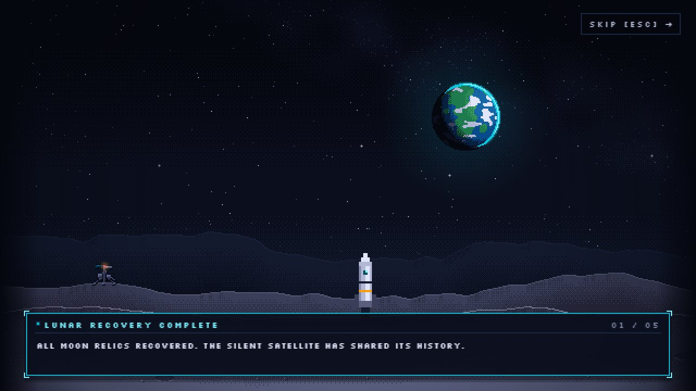
Chapter transition
- One clear silhouette in the middle of an otherwise quiet frame.
- Low horizon leaves two-thirds of the frame for sky and Earth.
24-colour palette
Four ramps and two accent ramps. Shadows go to deep indigo, never black. Select a swatch to copy its hex.
Sprite scale
Crops from the screenshots at 3×, nearest-neighbour. Characters are about 24 px and hardware 24–40 px on the 640×360 grid. Each one has a lit top-left edge, an indigo contact shadow, and orange only on lights.
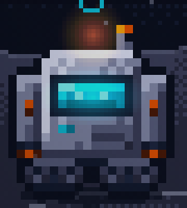
robot · 24 px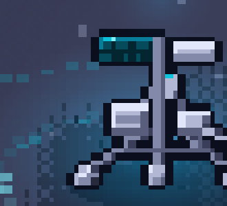
lander · top-down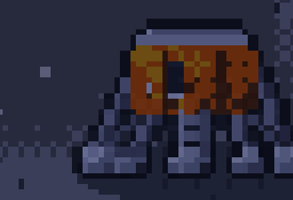
descent stage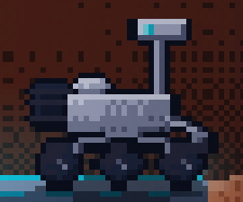
rover · side view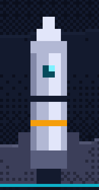
rocket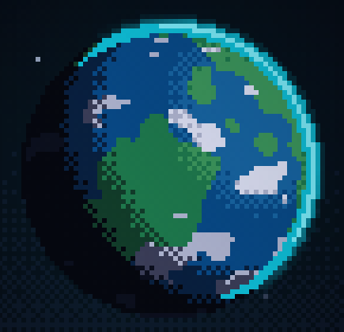
Earth · 64 px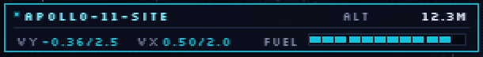
HUD panel · 1:1 at 2× scaleRules to hand the visual designer
| Area | Rule |
|---|---|
| Grid | 640×360 internal resolution, integer scaling, image-rendering: pixelated. Detailed modern pixel art, not 8-bit blocks. |
| Light | One cool light from Earth or sky. Lit edges get a 1 px light rim. Shadows are deep indigo, never black. |
| Colour roles | Cyan = story voice, UI and focus. Amber = verified record and badges. Orange = thrust and lamps only. |
| Ground | Layered rock, ledges, cracks, small stones, craters with soft contact shadows. Moon: grey regolith, purple shadows. Mars: rust and ochre, dusty haze. |
| Sky | Dense small stars, a few larger twinkles. Earth detailed from the Moon, a pale dot from Mars. |
| Depth | Four parallax layers, each darker and cooler with distance. |
| FX | Soft bloom on glows, light vignette, ground-hugging dust. No flashing. Reduced motion turns off parallax drift and shake. |
| UI | Dark translucent panels, 1 px cyan edge, small corner notches, square corners, one pixel font for labels. |
| Never | NASA logos or insignia, plants, aliens, coins, enemies, HP bars, inventory. |
Two voices, two colours
The practice build already separates fiction from fact by colour and label. The new plan needs the same split.
"Built as twins and sent to opposite sides of the planet."
Becomes Memory Echo: cyan frame, first-person, dramatised.
Opportunity drove more than 45 kilometers on Mars.
Becomes Archivist Note and Deep Dive: amber frame, sourced, links out.
What carries over to the new plan
Keep
- Palette, lighting rules and colour roles.
- Side-view and top-down scene templates with swappable ground ramps.
- Cyan/amber framing for echo versus evidence.
- Notched DOM panels and outlined status badges.
- Caption-console cutscene layout for chapter cards.
Change or drop
- The pixel title font: no licence on record. Pick an OFL pixel font on the day.
- Twitch jetpack landing: the new plan wants no reaction-time play and says Surveyor wasn't hand-flown.
- Robot hero: the new plan has a human Signal Archivist in an observatory. That interior needs its own look.
- The second palette in
docs/DESIGN.md, which conflicts with the 24-colour one. Use one palette.